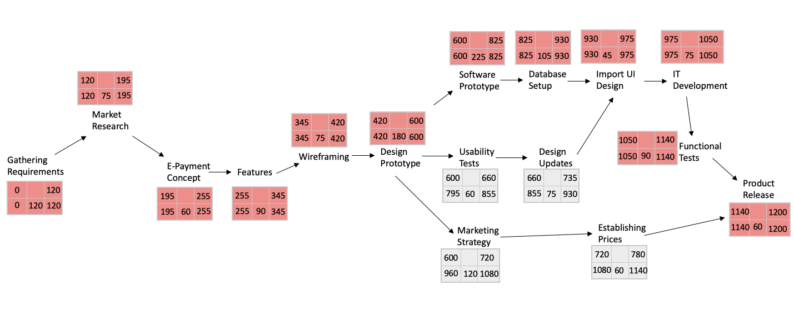
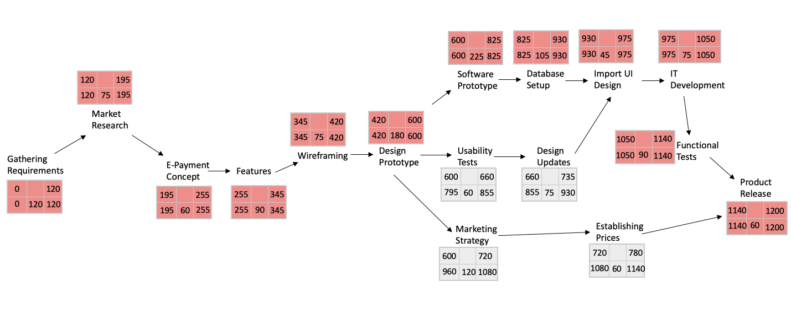

Project Schedule Network
- A flowchart that graphically depicts the sequence, interdependencies, and start and finish times of the project job plan

A project manager needs to know the interdependencies of the activities to decide which activities need to be done first while which activities can be done together.
Critical Path
- The longest path through the activity network that allows for completion of all project related activities
- The shortest expected time in which the entire project can be completed
- Delays on the critical path can delay completion of the entire project

Numbers in Network Diagrams refers to the total number of minutes required per task